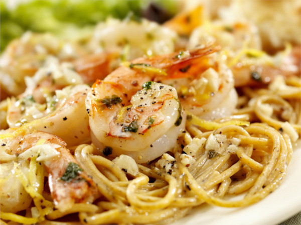

Scampi

Shrimp Scampi
Shrimp Scampi is a simple pasta recipe, it is a great recipe to learn the basics of cooking.
Ingredients
- Shrimp
- Spaghetti
- Garlic
- Butter
- Olive oil
- Lemon
- Salt
- Black pepper
- Red Chili Flakes
Directions
- Bring pot to boil and add salt and pasta
- On meduim heat in a pan add olive oil, once shimmering add uncooked shrimp to pan. Cook evenly on both sides
- Set aside cooked shrimp and add butter and garlic to the pan
- Once the garlic is lightly cooked add Spices to salt to the butter sauce to taste
- Add pasta and shrimp to pan. Toss around in sauce to get everything well coated
- Serve in bowl with juice from a lemon wedge
Return to homepage